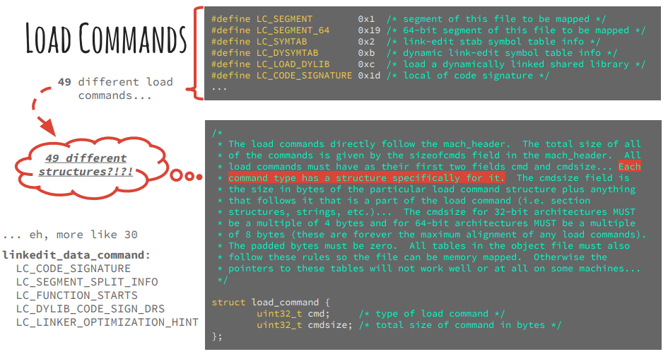

Load Commands
- 概述
- 位置：Load commands紧跟在Mach-O的Header之后
- 作用：Load commands指定了文件的布局结构和链接特征
- 有很多很多种Load commands
- 这些加载指令清晰地告诉加载器如何处理二进制数据，有些命令是由内核处理的，有些是由动态链接器处理的
Load Commands类型介绍
- 概述
LC_SEGMENT：被映射到内存的段LC_SYMTAB：符号表LC_DYSYMTAB：动态符号表LC_LOAD_DYLIB：动态链接库
- 详解
LC_REQ_DYLD= 0x8000_0000- 含义：After MacOS X 10.1 when a new load command is added that is required to be understood by the dynamic linker for the image to execute properly the LC_REQ_DYLD bit will be or'ed into the load command constant. If the dynamic linker sees such a load command it it does not understand will issue a "unknown load command required for execution" error and refuse to use the image. Other load commands without this bit that are not understood will simply be ignored.
LC_SEGMENT= 0x1- 数据结构定义：
segment_command - 含义：segment of this file to be mapped
- Defines a segment of this file to be mapped into the address space of the process that loads this file. It also includes all the sections contained by the segment.
- 数据结构定义：
LC_SYMTAB= 0x2- 数据结构定义：
symtab_command - 含义：link-edit stab symbol table info
- Specifies the symbol table for this file. This information is used by both static and dynamic linkers when linking the file, and also by debuggers to map symbols to the original source code files from which the symbols were generated.
- 数据结构定义：
- LC_SYMSEG = 0x3
- link-edit gdb symbol table info (obsolete)
LC_THREAD= 0x4- 数据结构定义：
thread_command - 含义：thread
- For an executable file, the
LC_UNIXTHREADcommand defines the initial thread state of the main thread of the process.LC_THREADis similar toLC_UNIXTHREADbut does not cause the kernel to allocate a stack.
- For an executable file, the
- 数据结构定义：
LC_UNIXTHREAD= 0x5- 含义：unix thread (includes a stack)
- LC_LOADFVMLIB = 0x6
- load a specified fixed VM shared library
- LC_IDFVMLIB = 0x7
- object identification info (obsolete)
- LC_IDENT = 0x8
- object identification info (obsolete)
- LC_FVMFILE = 0x9
- fixed VM file inclusion (internal use)
- LC_PREPAGE = 0xa
- prepage command (internal use)
LC_DYSYMTAB= 0xb- 数据结构定义：
dysymtab_command - 含义：dynamic link-edit symbol table info
- Specifies additional symbol table information used by the dynamic linker.
- 数据结构定义：
LC_LOAD_DYLIB= 0xc- 数据结构定义：
dylib_command - 含义：load a dynamically linked shared library
- Defines the name of a dynamic shared library that this file links against.
- 数据结构定义：
LC_ID_DYLIB= 0xd- 数据结构定义：
dylib_command - 含义：dynamically linked shared lib ident
- Specifies the install name of a dynamic shared library.
- 数据结构定义：
LC_LOAD_DYLINKER= 0xe- 数据结构定义：
dylinker_command - 含义：load a dynamic linker
- Specifies the dynamic linker that the kernel executes to load this file.
- 数据结构定义：
LC_ID_DYLINKER= 0xf- 数据结构定义：
dylinker_command - 含义：dynamic linker identification
- Identifies this file as a dynamic linker.
- 数据结构定义：
LC_PREBOUND_DYLIB= 0x10- 数据结构定义：
prebound_dylib_command - 含义：modules prebound for a dynamically linked shared library
- For a shared library that this executable is linked prebound against, specifies the modules in the shared library that are used.
- 数据结构定义：
LC_ROUTINES= 0x11- 数据结构定义：
routines_command - 含义：image routines
- Contains the address of the shared library initialization routine (specified by the linker’s
-initoption).
- Contains the address of the shared library initialization routine (specified by the linker’s
- 数据结构定义：
LC_SUB_FRAMEWORK= 0x12- 数据结构定义：
sub_framework_command - 含义：sub framework
- Identifies this file as the implementation of a subframework of an umbrella framework. The name of the umbrella framework is stored in the string parameter.
- 数据结构定义：
LC_SUB_UMBRELLA= 0x13- 数据结构定义：
sub_umbrella_command - 含义：sub umbrella
- Specifies a file that is a subumbrella of this umbrella framework.
- 数据结构定义：
LC_SUB_CLIENT= 0x14- 数据结构定义：
sub_client_command - 含义：sub client
- A subframework can explicitly allow another framework or bundle to link against it by including an
LC_SUB_CLIENTload command containing the name of the framework or a client name for a bundle.
- A subframework can explicitly allow another framework or bundle to link against it by including an
- 数据结构定义：
LC_SUB_LIBRARY= 0x15- 数据结构定义：
sub_library_command - 含义：sub library
- Defines the attributes of the
LC_SUB_LIBRARYload command. Identifies a sublibrary of this framework and marks this framework as an umbrella framework.
- Defines the attributes of the
- 数据结构定义：
LC_TWOLEVEL_HINTS= 0x16- 数据结构定义：
twolevel_hints_command - 含义：two-level namespace lookup hints
- Contains the two-level namespace lookup hint table.
- 数据结构定义：
- LC_PREBIND_CKSUM = 0x17
- prebind checksum
- LC_LOAD_WEAK_DYLIB = 0x18 | LC_REQ_DYLD = 0x80000018
- load a dynamically linked shared library that is allowed to be missing (all symbols are weak imported)
LC_SEGMENT_64= 0x19- 数据结构定义：
segment_command_64 - 含义：64-bit segment of this file to be mapped
- Defines a 64-bit segment of this file to be mapped into the address space of the process that loads this file. It also includes all the sections contained by the segment.
- 数据结构定义：
LC_ROUTINES_64= 0x1a- 数据结构定义：
routines_command_64 - 含义：64-bit image routines
- Contains the address of the shared library 64-bit initialization routine (specified by the linker’s
-initoption).
- Contains the address of the shared library 64-bit initialization routine (specified by the linker’s
- 数据结构定义：
LC_UUID= 0x1b- 数据结构定义：
uuid_command - 含义：the uuid
- Specifies the 128-bit UUID for an image or its corresponding dSYM file
- 数据结构定义：
- LC_RPATH = 0x1c | LC_REQ_DYLD = 0x8000001c
- run path additions
- LC_CODE_SIGNATURE = 0x1d
- local of code signature
- LC_SEGMENT_SPLIT_INFO = 0x1e
- local of info to split segments
- LC_REEXPORT_DYLIB = 0x1f | LC_REQ_DYLD = 0x8000001f
- load and re-export dylib
- LC_LAZY_LOAD_DYLIB = 0x20
- delay load of dylib until first use
- LC_ENCRYPTION_INFO = 0x21
- encrypted segment information
- LC_DYLD_INFO = 0x22
- compressed dyld information
- LC_DYLD_INFO_ONLY = 0x22 | LC_REQ_DYLD = 0x80000022
- compressed dyld information only
- LC_LOAD_UPWARD_DYLIB = 0x23 | LC_REQ_DYLD = 0x80000023
- load upward dylib
- LC_VERSION_MIN_MACOSX = 0x24
- build for MacOSX min OS version
- LC_VERSION_MIN_IPHONEOS = 0x25
- build for iPhoneOS min OS version
- LC_FUNCTION_STARTS = 0x26
- compressed table of function start addresses
- LC_DYLD_ENVIRONMENT = 0x27
- string for dyld to treat like environment variable
- LC_MAIN = 0x28 | LC_REQ_DYLD = 0x80000028
- replacement for LC_UNIXTHREAD
- LC_DATA_IN_CODE = 0x29
- table of non-instructions in __text
- LC_SOURCE_VERSION = 0x2A
- source version used to build binary
- LC_DYLIB_CODE_SIGN_DRS = 0x2B
- Code signing DRs copied from linked dylibs
- LC_ENCRYPTION_INFO_64 = 0x2C
- 64-bit encrypted segment information
- LC_LINKER_OPTION = 0x2D
- linker options in MH_OBJECT files
- LC_LINKER_OPTIMIZATION_HINT = 0x2E
- optimization hints in MH_OBJECT files
- LC_VERSION_MIN_TVOS = 0x2F
- build for AppleTV min OS version
- LC_VERSION_MIN_WATCHOS = 0x30
- build for Watch min OS version
- LC_NOTE = 0x31
- arbitrary data included within a Mach-O file
- LC_BUILD_VERSION = 0x32
- build for platform min OS version
- LC_DYLD_EXPORTS_TRIE = 0x33 | LC_REQ_DYLD = 0x80000033
- used with
LinkeditDataCommand, payload is trie
- used with
- LC_DYLD_CHAINED_FIXUPS = 0x34 | LC_REQ_DYLD = 0x80000034
- used with
LinkeditDataCommand
- used with
- LC_FILESET_ENTRY = 0x35 | LC_REQ_DYLD = 0x80000035
- used with
FilesetEntryCommand
- used with
Load Commands定义

源码定义
- loader.h
- xnu-2050.18.24
- xnu-7195.81.3
- loader.h
/*
* The load commands directly follow the mach_header. The total size of all
* of the commands is given by the sizeofcmds field in the mach_header. All
* load commands must have as their first two fields cmd and cmdsize. The cmd
* field is filled in with a constant for that command type. Each command type
* has a structure specifically for it. The cmdsize field is the size in bytes
* of the particular load command structure plus anything that follows it that
* is a part of the load command (i.e. section structures, strings, etc.). To
* advance to the next load command the cmdsize can be added to the offset or
* pointer of the current load command. The cmdsize for 32-bit architectures
* MUST be a multiple of 4 bytes and for 64-bit architectures MUST be a multiple
* of 8 bytes (these are forever the maximum alignment of any load commands).
* The padded bytes must be zero. All tables in the object file must also
* follow these rules so the file can be memory mapped. Otherwise the pointers
* to these tables will not work well or at all on some machines. With all
* padding zeroed like objects will compare byte for byte.
*/
struct load_command {
uint32_t cmd; /* type of load command */
uint32_t cmdsize; /* total size of command in bytes */
};
/*
* After MacOS X 10.1 when a new load command is added that is required to be
* understood by the dynamic linker for the image to execute properly the
* LC_REQ_DYLD bit will be or'ed into the load command constant. If the dynamic
* linker sees such a load command it it does not understand will issue a
* "unknown load command required for execution" error and refuse to use the
* image. Other load commands without this bit that are not understood will
* simply be ignored.
*/
#define LC_REQ_DYLD 0x80000000
/* Constants for the cmd field of all load commands, the type */
#define LC_SEGMENT 0x1 /* segment of this file to be mapped */
#define LC_SYMTAB 0x2 /* link-edit stab symbol table info */
#define LC_SYMSEG 0x3 /* link-edit gdb symbol table info (obsolete) */
#define LC_THREAD 0x4 /* thread */
#define LC_UNIXTHREAD 0x5 /* unix thread (includes a stack) */
#define LC_LOADFVMLIB 0x6 /* load a specified fixed VM shared library */
#define LC_IDFVMLIB 0x7 /* fixed VM shared library identification */
#define LC_IDENT 0x8 /* object identification info (obsolete) */
#define LC_FVMFILE 0x9 /* fixed VM file inclusion (internal use) */
#define LC_PREPAGE 0xa /* prepage command (internal use) */
#define LC_DYSYMTAB 0xb /* dynamic link-edit symbol table info */
#define LC_LOAD_DYLIB 0xc /* load a dynamically linked shared library */
#define LC_ID_DYLIB 0xd /* dynamically linked shared lib ident */
#define LC_LOAD_DYLINKER 0xe /* load a dynamic linker */
#define LC_ID_DYLINKER 0xf /* dynamic linker identification */
#define LC_PREBOUND_DYLIB 0x10 /* modules prebound for a dynamically */
/* linked shared library */
#define LC_ROUTINES 0x11 /* image routines */
#define LC_SUB_FRAMEWORK 0x12 /* sub framework */
#define LC_SUB_UMBRELLA 0x13 /* sub umbrella */
#define LC_SUB_CLIENT 0x14 /* sub client */
#define LC_SUB_LIBRARY 0x15 /* sub library */
#define LC_TWOLEVEL_HINTS 0x16 /* two-level namespace lookup hints */
#define LC_PREBIND_CKSUM 0x17 /* prebind checksum */
/*
* load a dynamically linked shared library that is allowed to be missing
* (all symbols are weak imported).
*/
#define LC_LOAD_WEAK_DYLIB (0x18 | LC_REQ_DYLD)
#define LC_SEGMENT_64 0x19 /* 64-bit segment of this file to be
mapped */
#define LC_ROUTINES_64 0x1a /* 64-bit image routines */
#define LC_UUID 0x1b /* the uuid */
#define LC_RPATH (0x1c | LC_REQ_DYLD) /* runpath additions */
#define LC_CODE_SIGNATURE 0x1d /* local of code signature */
#define LC_SEGMENT_SPLIT_INFO 0x1e /* local of info to split segments */
#define LC_REEXPORT_DYLIB (0x1f | LC_REQ_DYLD) /* load and re-export dylib */
#define LC_LAZY_LOAD_DYLIB 0x20 /* delay load of dylib until first use */
#define LC_ENCRYPTION_INFO 0x21 /* encrypted segment information */
#define LC_DYLD_INFO 0x22 /* compressed dyld information */
#define LC_DYLD_INFO_ONLY (0x22|LC_REQ_DYLD) /* compressed dyld information only */
#define LC_LOAD_UPWARD_DYLIB (0x23 | LC_REQ_DYLD) /* load upward dylib */
#define LC_VERSION_MIN_MACOSX 0x24 /* build for MacOSX min OS version */
#define LC_VERSION_MIN_IPHONEOS 0x25 /* build for iPhoneOS min OS version */
#define LC_FUNCTION_STARTS 0x26 /* compressed table of function start addresses */
#define LC_DYLD_ENVIRONMENT 0x27 /* string for dyld to treat
like environment variable */
#define LC_MAIN (0x28|LC_REQ_DYLD) /* replacement for LC_UNIXTHREAD */
#define LC_DATA_IN_CODE 0x29 /* table of non-instructions in __text */
#define LC_SOURCE_VERSION 0x2A /* source version used to build binary */
#define LC_DYLIB_CODE_SIGN_DRS 0x2B /* Code signing DRs copied from linked dylibs */
#define LC_ENCRYPTION_INFO_64 0x2C /* 64-bit encrypted segment information */
#define LC_LINKER_OPTION 0x2D /* linker options in MH_OBJECT files */
#define LC_LINKER_OPTIMIZATION_HINT 0x2E /* optimization hints in MH_OBJECT files */
#define LC_VERSION_MIN_TVOS 0x2F /* build for AppleTV min OS version */
#define LC_VERSION_MIN_WATCHOS 0x30 /* build for Watch min OS version */
#define LC_NOTE 0x31 /* arbitrary data included within a Mach-O file */
#define LC_BUILD_VERSION 0x32 /* build for platform min OS version */
#define LC_DYLD_EXPORTS_TRIE (0x33 | LC_REQ_DYLD) /* used with linkedit_data_command, payload is trie */
#define LC_DYLD_CHAINED_FIXUPS (0x34 | LC_REQ_DYLD) /* used with linkedit_data_command */
#define LC_FILESET_ENTRY (0x35 | LC_REQ_DYLD) /* used with fileset_entry_command */
- 说明
iOS 15.0后新增的Load CommandLC_DYLD_CHAINED_FIXUPSLC_DYLD_EXPORTS_TRIE